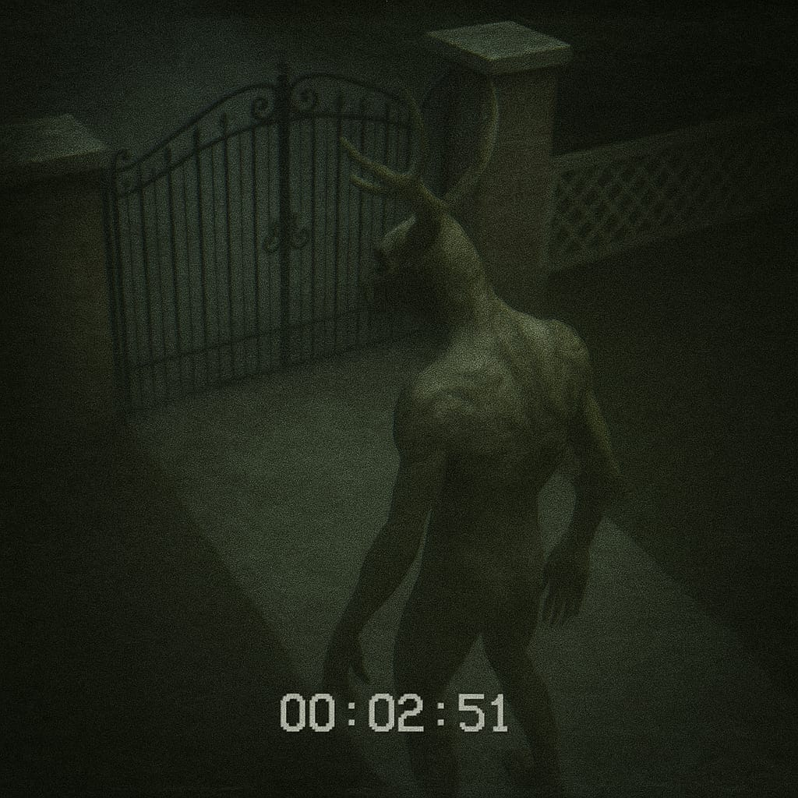
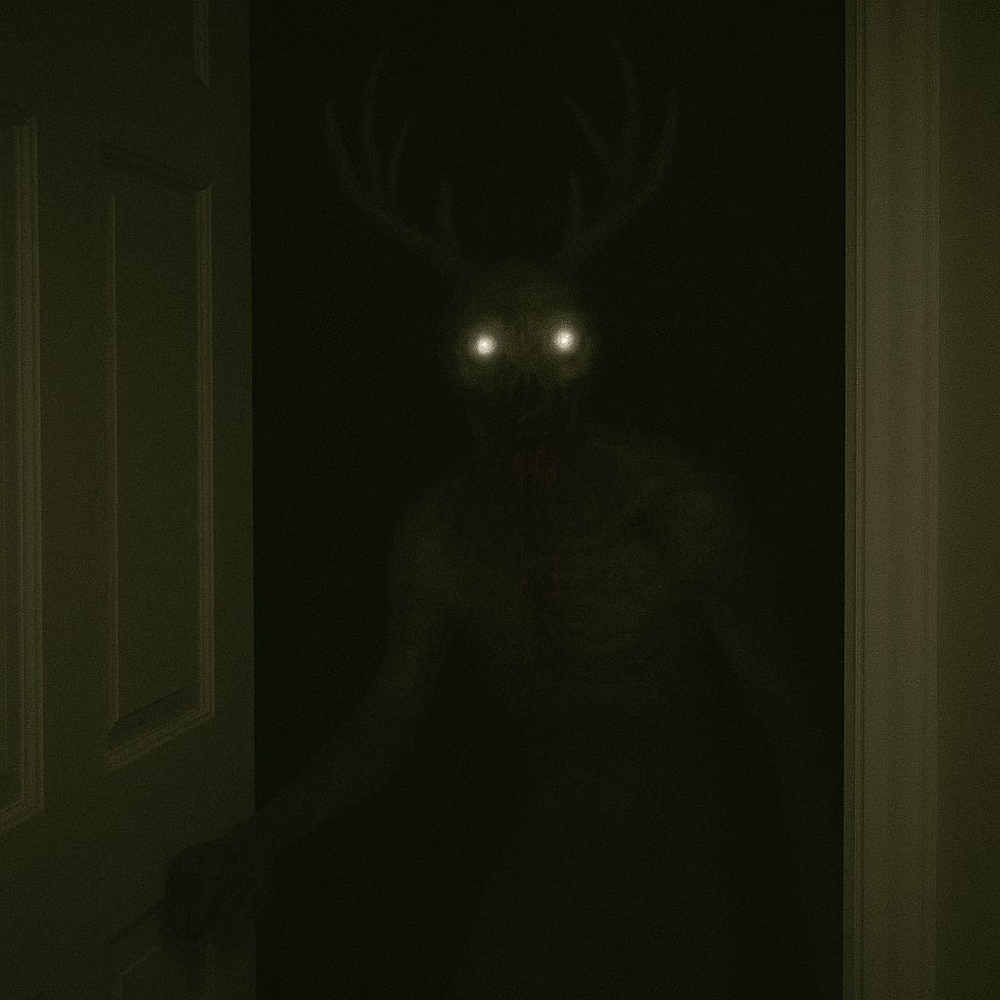
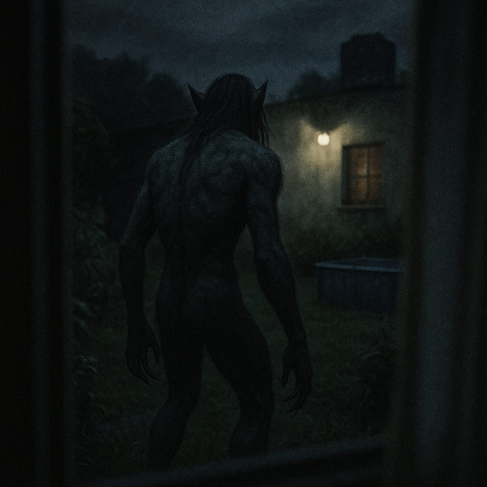

Wendigo


Criatura del folklore americano que se manifestó en territorio argentino.
Los casos de desapariciones que rodean a esta criatura son alarmantemente numerosos. Se trata de un ser grande y violento, con un apetito insaciable por la carne humana,
por lo que no se conforman únicamente con una víctima. Se recomienda contactarnos inmediatamente ante el avistamiento de un Wendigo.
Lobizón

El Lobizón es el licantropo de nuestras tierras, de día es humano pero en las noches de luna llena se transforma en una criatura de descomunal fuerza, grandes colmillos,
grandes y afiladas garras y una apariencia que hace recordar a un lobo. Se cree que el septimo hijo varón de una pareja tiene mayor predisposición a tranformarse en un
lobizón, pero no son los únicos, también la tienen aquellos que son victimas de una maldición, que tienen contacto con las artes ocuras o aquellos que se atrevierona a romper
pactos. Si tiene la sospecha de que usted o algún familiar podría ser un lobizón, contactenos.